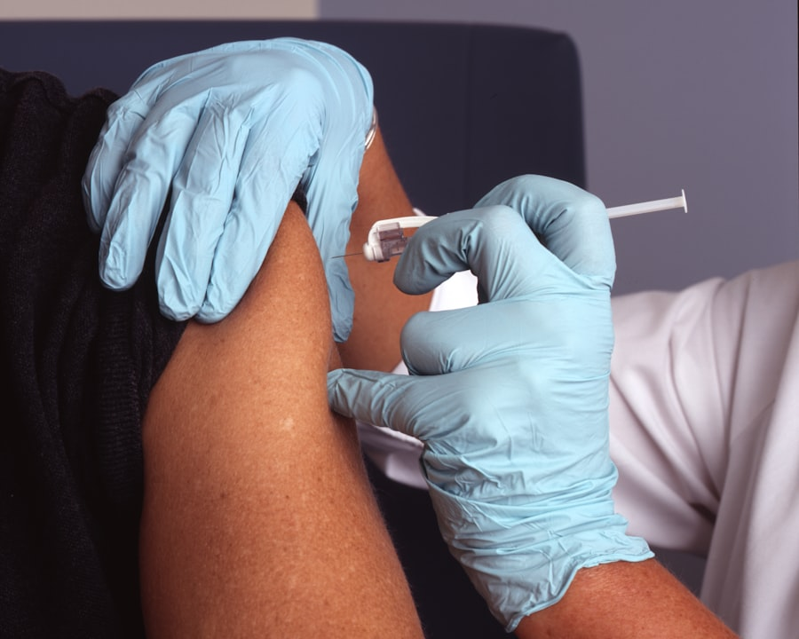

Personalized Treatment
We assess each patient individually and create recovery programs aligned with clinical needs and daily routine.
Trusted Ortho & Neuro Rehabilitation Care
Ortho • Neuro • Rehab • Home Care
At Negi Physiotherapy Clinic, we combine evidence-based treatment, compassionate care, and focused rehabilitation plans to help you recover faster, move better, and return to daily life with confidence.
12+ Years
Clinical experience in orthopedic and neuro rehab
5,000+ Patients
Successfully treated with customized recovery plans
Negi Physiotherapy Clinic – Ortho & Neuro Rehab Center is dedicated to restoring mobility, reducing pain, and improving quality of life through structured and patient-focused physiotherapy. Every treatment plan is tailored to your condition, lifestyle, and recovery goals.
We assess each patient individually and create recovery programs aligned with clinical needs and daily routine.
From manual therapy to modern rehabilitation protocols, we use evidence-based techniques for sustainable outcomes.
Hands-on clinical expertise in orthopedic pain, neurological rehabilitation, and post-surgical recovery support.
Meet Your Physiotherapist
Known for result-focused orthopedic and neurological rehabilitation, Dr. Negi helps patients recover confidently through a practical and personalized care approach.

Comprehensive care designed to reduce pain, restore movement, and accelerate recovery.
Comprehensive assessment and hands-on treatment for back pain, neck stiffness, arthritis, ligament injuries, and posture-related issues.

Specialized rehabilitation for stroke, paralysis, nerve injuries, and balance disorders with step-by-step functional retraining.

Structured rehab for sprains, muscle tears, tendon overload, and overuse injuries to safely return to sports and fitness activity.
Planned rehabilitation after fracture fixation, ligament repair, joint replacement, and spine procedures to restore safe movement.

Evidence-based pain relief strategies combining electrotherapy, manual techniques, exercise therapy, and ergonomic correction.
Professional physiotherapy at home for elderly care, post-operative recovery, and patients with limited mobility.
Targeted electrotherapy options to reduce pain, improve circulation, speed tissue healing, and support faster functional recovery.

Deep tissue heating to ease stiffness, muscle spasm, and chronic joint pain.
Best for chronic muscular tightness and old joint pain where deep heat improves local blood flow. It is usually combined with mobilization and stretching for longer-lasting relief.
Comfortable thermal modality for pain relief, circulation boost, and soft tissue relaxation.
LWD provides a gentler heat profile than traditional deep heating, making it useful in sensitive regions. It helps reduce guarding before movement therapy and exercise sessions.

Ultrasonic waves for tendon healing, scar tissue remodeling, and inflammation control.
UST is commonly used for tendinopathy, soft tissue adhesions, and localized inflammation. Dosage is selected based on tissue depth and stage of healing.

Soothing paraffin heat therapy that reduces stiffness in hands, wrists, and small joints.
Especially helpful in post-immobilization stiffness and osteoarthritic small joints. Wax heat prepares tissues for active hand therapy and improves movement comfort.

Neuromuscular stimulation to re-activate weak muscles and improve contraction quality.
Often used after surgery, injury, or prolonged disuse to re-educate muscle firing. It complements voluntary exercise and supports better motor recovery.

Non-invasive electrical pain modulation for neck, back, and joint discomfort.
TENS is useful for acute and chronic pain episodes and can reduce analgesic dependency in some patients. Frequency and intensity are individualized for best response.

High-intensity therapeutic laser to reduce inflammation, accelerate tissue repair, and ease pain.
Class IV laser reaches deeper targets with photobiomodulation effects that support healing and pain reduction. Helpful in tendon, ligament, and chronic joint conditions.

Phase-specific thermal care to decrease swelling, reduce soreness, and improve mobility.
Cold packs are ideal for acute swelling and inflammation, while heat helps chronic tightness and stiffness. We guide timing and duration to prevent overuse.

Medium-frequency current for deeper pain relief and edema control in musculoskeletal issues.
IFT can target larger painful areas with comfortable stimulation and is often used in back pain, shoulder pain, and post-injury swelling control.
Customized strengthening, flexibility, and functional drills tailored to recovery goals.
This is the core of long-term recovery. Programs are progressed in stages to improve strength, endurance, balance, and daily function safely.

Gentle decompression to relieve nerve pressure, disc stress, and radiating spinal pain.
Used selectively for cervical/lumbar radicular symptoms, traction may improve space around compressed nerves. It is integrated with posture and core rehab.
Condition-specific rehabilitation pathways focused on pain reduction, function restoration, and long-term relapse prevention.

Progressive mobility and capsule-release protocol to restore pain-free shoulder movement.
Treatment typically includes pain-phase care, mobility restoration, and strengthening phases. Regular supervised exercise improves recovery speed and shoulder function.

Posture correction, vestibular drills, and neck stabilization for symptom control.
Combines manual cervical techniques, gaze stabilization, and deep neck flexor training to reduce dizziness episodes and neck strain in daily activities.

Core stabilization, neural unloading, and graded functional retraining for back health.
A structured plan addresses pain flare management, posture habits, lifting mechanics, and safe return to work/activity while minimizing recurrence risk.

Joint-friendly strengthening and mobility care to improve walking tolerance and comfort.
Focus is on pain-modulation exercises, muscle support around the joint, and gait correction. Lifestyle advice helps reduce stress on arthritic joints.
Stepwise range, strength, and confidence training after immobilization or surgery.
Rehab progresses from stiffness reduction to weight-bearing and functional retraining. It is customized to fracture site, fixation type, and healing timeline.

Tendon loading protocol and grip retraining to reduce lateral elbow pain recurrence.
Includes progressive eccentric loading, forearm conditioning, and workstation/sport technique correction to reduce repetitive strain on the extensor tendon.

Neurological rehab emphasizing trunk control, gait training, and ADL independence.
Programs include neurofacilitation, tone management, balance work, and caregiver education. The goal is safe mobility and meaningful daily independence.
ROM recovery, quadriceps strengthening, and gait normalization post knee replacement.
Early rehab focuses on swelling control and extension gain; later stages target stair climbing, endurance, and confidence in community walking.

Safe mobility progression with hip precautions, balance retraining, and endurance drills.
Rehab addresses safe transfers, walking pattern correction, and glute strengthening while respecting post-surgical precautions during early recovery.
Criterion-based rehab to restore stability, power, and return-to-activity readiness.
Milestone-based progression covers swelling control, strength symmetry, neuromuscular control, and sport/work-specific drills before return clearance.

Protected movement training, posture correction, and staged functional reconditioning.
Program phases are aligned with surgeon precautions and healing stage, focusing on core control, safe movement mechanics, and graded return to daily life.
Early physiotherapy intervention helps reduce pain, improve mobility, and prevent long-term complications.
Certified Physiotherapist with a patient-first treatment philosophy.
Personalized Care Plan for every stage of your recovery journey.
Advanced Equipment and progressive techniques for measurable results.
Home Visit Available for elderly patients and post-operative care.
Affordable Treatment options with transparent care guidance.
Don’t let pain limit your life. Book your consultation now and take the first step toward a stronger, healthier future.
Book AppointmentFor appointments, follow-up sessions, or home physiotherapy support, connect with us directly.
Clinic Timings
Summer: 9:00 AM - 1:00 PM, 4:00 PM - 8:00 PM
Winter: 10:00 AM - 1:00 PM, 3:00 PM - 6:00 PM